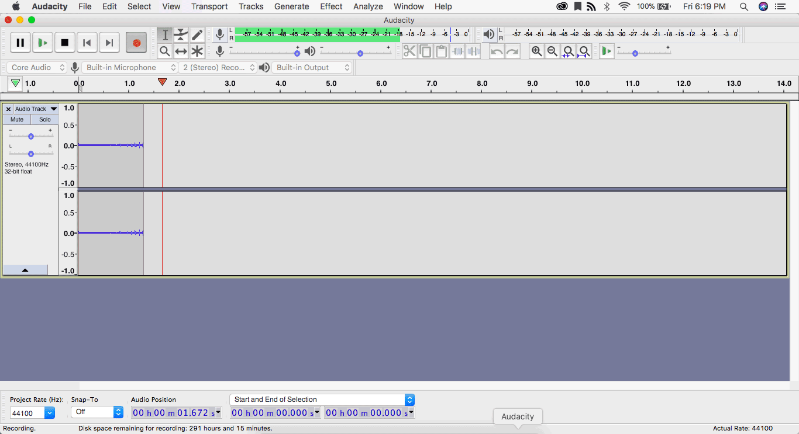
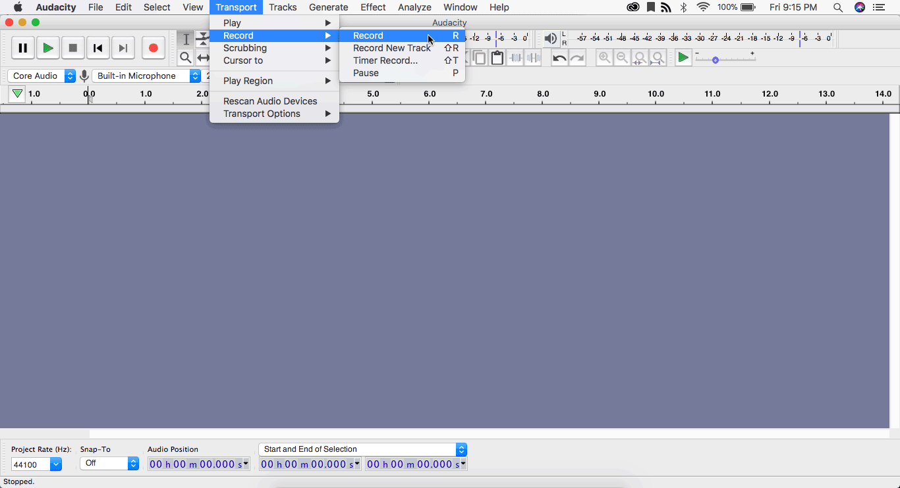
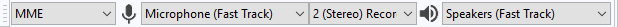
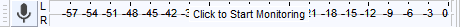
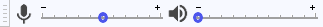

Audacity
Audacity: RecordingASound
Recording a sound
Software name : Audacity
Software version : 2.2.1
Recording sound with Audacity is very straightforward: you just need to have a computer that has a sound card with at least a microphone (mic) or line input.
Getting started
Before making a recording you need to make sure that the device you want to record from is connected to the audio input of your computer's sound card. To do this you can use your computer's sound control panel or the custom mixer application for your specific soundcard, selecting the input device you want to use and verifying that you are getting sound into the computer from that device. Note that you can also use Audacity's own Recording meter to test whether your desired recording device is inputting properly, and at appropriate levels. However, and especially if this is your first attempt to record, it is preferable to first use your OS control panel or sound card's mixer application to verify audio input connectivity. Then you can launch Audacity.
MacOSX Recording Configuration
If your Mac has a built-in microphone (most do), Audacity 2.2.1 for OS X should already be connected to it once it is installed. This means you can start recording in Audacity 2.2.1 right away.
Recording Sound Using Audacity in OSX
To record, simply press the R key, and a new audio track will appear and automatically start recording. You can then speak, and/or play any other sounds on your Mac.

You can also record sound by selecting Transport > Record > Record in the main menu:

Windows and Linux Recording Configuration
Windows and Linux use controls that can be accessed entirely from the Audacity GUI. First you need to choose the input device. As we saw in the Toolbars chapter, the Device Toolbar is where you select your desired Recording Device (second dropdown), as well as desired Audio Host (first dropdown: for Windows the options will be MME, Windows DirectSound and Windows WASAPI-- see Device Toolbar for more detail on these options). Here you can also select whether you want Mono or Stereo recording (second dropdown):

Testing Audio Levels
Now that you have everything set up and ready to go you can begin the recording process.
Before making the recording it is important to preview the loudest section of the source audio so that you do not end up with a distorted recording.
For this you will use the Recording Toolbar and Mixer Toolbar, as detailed in the Toolbars chapter:

The recording meter here will automatically be activated when you begin an actual recording; but since in this case you want a preview, simply click anywhere on the meter to activate monitoring. Now play the loudest passage of the audio you want to record and, while doing so, look at the recording meter:

At the loudest point in the audio, the green bar should ideally stretch all the way to around -9 dB (decibals); it's tip wil turn yellow between -9 dB and -6 dB, which is a warning margin, and will turn red just before -3 dB (which indicates that your input is is too loud or 'hot', and may be clipped by Audacity). Adjust the input/record slider of the Mixer Toolbar downward (toward the minus) if you see any red or much yellow; adjust the slider upward if your maximum input or 'peak' is far short of -12 dB.

While an ideal input level peak is between -12 dB and -9 dB, if you have difficulty hitting this target zone with input slider adjustments, it is better to err on the side of too little recording input (not green all the way to -12) as opposed to too much (a red tip). The output volume of a quieter recording can always be boosted in a subsequent editing stage; but a too-loud recording will be 'clipped' by Audacity, meaning it is too loud for Audacity to process and the top and bottom of the wave-form will be chopped off, thus losing some of the recorded wave information.
Recording
Now that you've tested your input device and recording levels, you are ready to make your proper recording.
Click the "Record" button on the Transport toolbar:
then play the audio you wish to record. Once the sound source has finished click the "Stop" button:
Your recording is now complete. It should appear in the Audacity GUI as a single audio track, showing either a single channel (if you've chosen mono recording) or dual L/R channels (if you've chosen stereo). Here I have made a stereo recording of a simple chord riff on accoustic guitar, from my built-in computer mic:

Note that the "Project Rate (Hz)" dropdown on the bottom left indicates that I have made my recording at a sample rate of 44100 Hz (44 KHz). This sample rate is compatible with traditional music-CD sound quality, and is the defaut for Audacity's recording mode. However, in the dropdown I could set the rate to as low as 8 KHz or as high as 384 KHz (which would produce a very high-fidelity but very large sound file).
Now listening to your recording with the Play button on the Transport toolbar:
If you are not satisfied with the recording, you can delete it from the project using the X in the upper left corner of the track bar (or by going to Edit > Delete in the main menu). However, before discarding a recording completely, you will want to consider whether it can be edited or otherwise modified, using Audacity's multitude of tools, to bring it closer to what you had in mind. Only experimentation and practice will help you decide whether to aim for perfection in the recording itself, or edit it after the fact.
If you decide to save the recording, do so by selecting "Save Project As" from the "File" menu (this will save the wave form as is, including all separate tracks in the project, allowing you to come back later for editing and export). As this is a new project, you will be prompted for a Project name as well as the location to save the Project file:

That's it! Your recording is completed and saved. If you want to access this project again for editing and/or export to a common audio file format such as MP3, use File > Open (not Import, which will not work with Aup files) and browse to the location of your saved Audacity project.